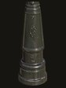
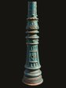
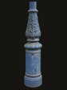
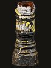

What the map shows
Each dot is one street lighting column that has been photographed. Select a dot to see its photos, design, condition and asset number.
Asset numbers
Kent County Council gives every column an asset number, and each dot sits on KCC’s mapped position for that column.
The designs

Biggleston standard (A1) the classic Canterbury column, with the city’s CC monogram on the door
Fluted drum (A2) a similar column without the monogram Small-door (A4) a short framed door, with fluting all round the base
Small-door (A4) a short framed door, with fluting all round the base
Reproductions (B1, B2) modern heritage-style columns by DW Windsor
Stubs and replacements shown where they now stand in place of an original
Good to know
The riverside path columns near Westwood Drive and Ambleside Place belong to Canterbury City Council, not KCC, so their numbers start with CCC and their dots sit where they were photographed.
Asset numbers come from KCC’s list of 26 September 2026 and may occasionally be wrong. Faces and number plates in the photos have been blurred.